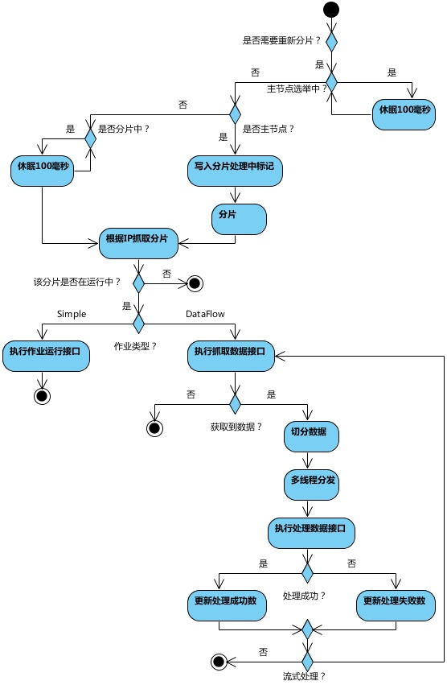

Theory illustrate
-
Theory for elastic and distributed
First job server online will trigger leader server election. If leader server offline will trigger re-election, during election the main thread will be blocked.
Job servers online will register server info into registry center automatically; job servers offline will update status.
Leader server election, job servers online or offline, sharding total count changes will update re-sharding flag.
When triggert scheduled task and need re-sharding, leader server sharding, other servers are blocked. Execute task must wait for sharding complete. If leader server crashed during sharding, will trigger leader election, and then sharing again.
During job executing, for stable reason, only flag, but not re-sharding. Sharind only occur at next task trigger.
Every sharding result will sort by IP address to make sure sharding result consistent.
Failover feature, when job server complete own task will pull orphan task items; one job server offline also trigger other idle job servers pull orphan task items.
-
Data structure for registry center
Registry center will create znode by job name in indicated namespace to difference jobs. Job znode includes 4 sub znodes: config, servers, execution and leader.
Overview

config node
Global configuration info for job
| Znode name | Ephemeral | Description |
| jobClass | N | Job class name |
| shardingTotalCount | N | Sharding total count |
| cron | N | CRON expression for job start |
| shardingItemParameters | N | Map for sharing item numbers and customized parameters |
| jobParameter | N | Job parameter for one job context |
| monitorExecution | N | Enable/disable monitor execution status |
| processCountIntervalSeconds | N | Job process count statistics interval seconds |
| concurrentDataProcessThreadCount | N | Max threads number for data concurrent process |
| fetchDataCount | N | Data fetch count for per fetch process |
| failover | N | Enable/disable failover |
| description | N | Description for job |
servers node
Job server info, sub node is server IP address. The sub nodes of IP address save server details. Same job server only can run one same job instance.
| Znode name | Ephemeral | Description |
| hostName | N | Server name |
| status | Y | Server status, include READY and RUNNING. Use to indicate server is waiting or execution job. If no status node means server offline now |
| disabled | N | Enable/disable Server status. Usually disable during publish jobs for multiple servers. |
| sharding | N | Assigned sharding items to this server. Multiple sharding items use comma to split. Example: 0,1,2 means this server assigned 1, 2 and 3 sharding items. |
| processSuccessCount | N | Statistics process success in a period of time. Interval can configure at config\processCountIntervalSeconds |
| processFailureCount | N | Statistics process failure in a period of time. Interval can configure at config\processCountIntervalSeconds |
| stoped | N | Job stop flag |
execution node
Execution info, sub node is sharding items number, start from zero, max is sharding total count minus one. Can disable record execution info at config\monitorExecution
| Znode name | Ephemeral | Description |
| running | Y | Running status of this sharing item. If this znode is not existed, and don't have completed znode, it means this sharding item is not run yet. |
| completed | N | Complete status of this sharing item. Will clean when next trigger. |
| failover | Y | If this sharding item is assigned to other server by failover, here will record server IP address for real execution. |
| lastBeginTime | N | Last begin time for this sharding item |
| nextFireTime | N | Next fire time for this sharding item |
| lastCompleteTime | N | Last complete time for this sharding item |
leader node
Leader server info, include election, sharding and execution, use to leader election, sharding and executing processing.
leader znode is an internal znode, if not interested for implement details, please ignore.
| Znode name | Ephemeral | Description |
| election\host | Y | Leader server IP address If this znode is removed will trigger leader re-election. During election main thread will block. |
| election\latch | N | Distributed lock for leader election. Used by Curator. |
| sharding\necessary | N | Sharding flag. Sharding total count changes, servers online or offline and leader election will trigger it. |
| sharding\processing | Y | When sharing by leader server, will hold this znode. If existed, all jobs will block until sharding completed. When sharding completed or leader server crashed, this znode will be removed. |
| execution\necessary | N | Fix execution info flag. If sharding total count changes, will trigger it. Elastic-Job will increase or decrease sharding numbers. |
| execution\cleaning | Y | When cleaning previous completed status by leader server, will hold this znode. Trigger every new task fired. If existed, all jobs will block until cleaning completed. When cleaning completed or leader server crashed, this znode will be removed. |
| failover\items\0(itemNumber) | N | Fill sharding item to this znode when their job server crashed. If some job servers idel, will pull sharing items from here. |
| failover\items\latch | N | Distributed lock for assign failover shadring items. Used by Curator. |
-
Flow chart
Job start

Job execution
